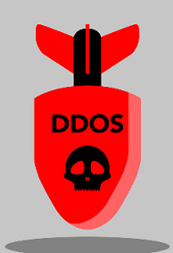

Saldırı sırasında belirli süre aralıklarıyla ayrıntılı raporlar hazırlanır ve saldırı sona erdikten sonra eksiksiz bir rapor yazılır.Bu raporlara DDoS Mitigation With AI programının arayüzünde
bulunan "Raporlar" kısmından ulaşabilirsiniz.
DDoS Mitigation With AI genel ağı tarafından desteklenen DDos Koruması, akan ağ trafiği içinde muazzam DDos riskini azaltma kapasitesi sağlar.
Her zaman açık izleme ve ağ saldırısı riskini otomatik olarak azaltma
DDoS saldırılarının beklenmedik maliyetlerine karşı koruma
TEKNO HABER

İstek ve önerileriniz için aşağıda bulunan mail adresine mail atabilirsiniz.